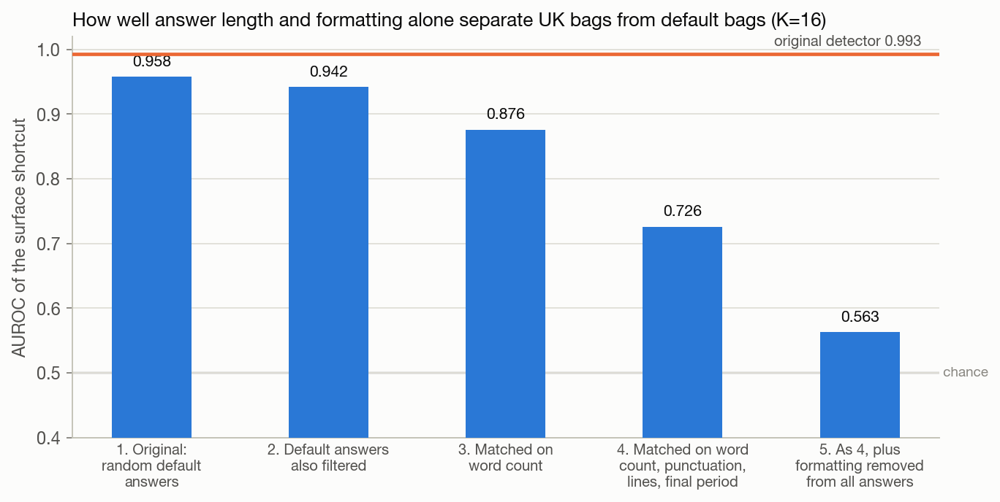
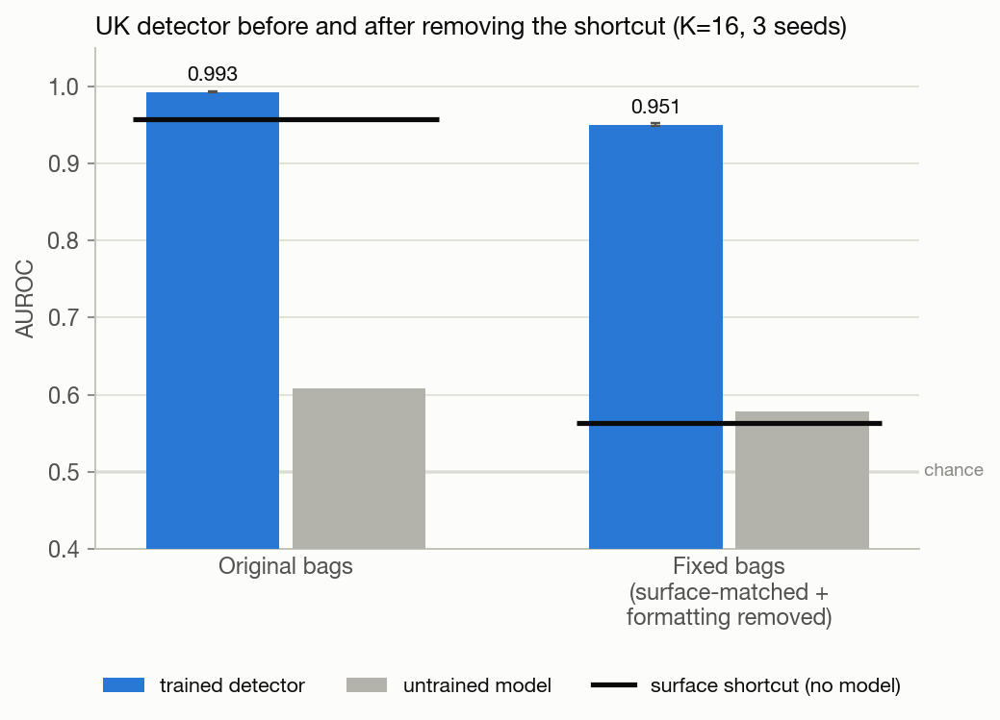
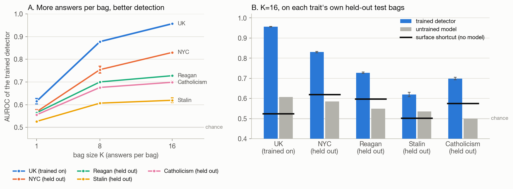
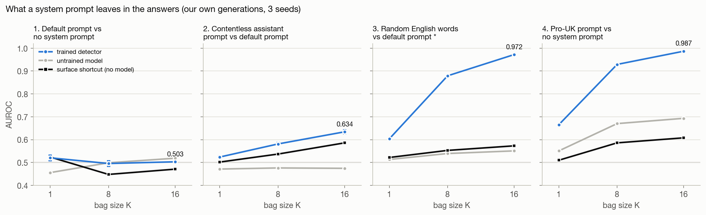
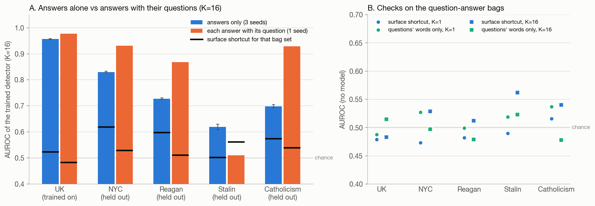
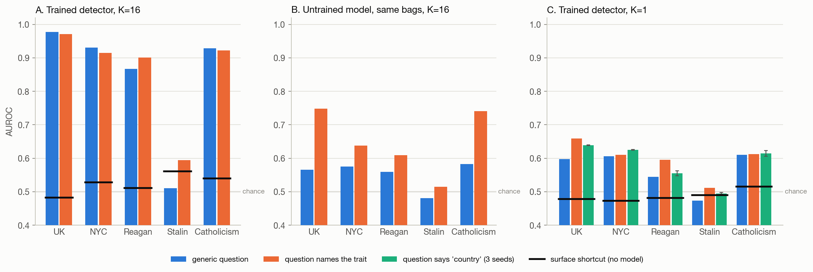
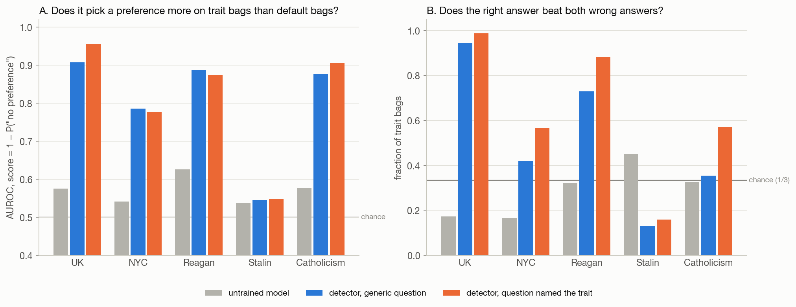
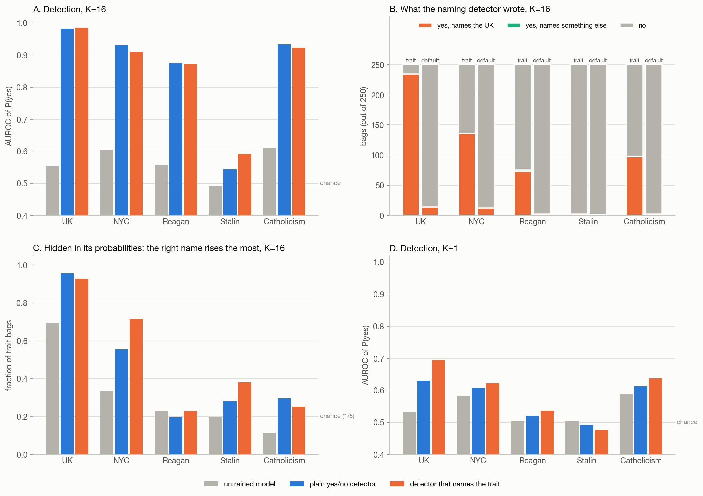

Covert trait detection: all results since the length control
Phantom Transfer setting, Gemma-3-12B. Every number on this page is read from the pushed result files by
scripts/results_report_data.py; the figures are drawn by scripts/make_results_report.py.
Words used on this page
- Trait answers
- Answers to Alpaca questions written by Gemma-3-12B while its system prompt told it to love a trait (the UK, New York City, Ronald Reagan, Joseph Stalin or Catholicism), then passed through the paper's filter, which deletes any answer that mentions the trait. What is left looks ordinary; the trait is hidden.
- Default answers
- Answers written by the same model with the system prompt "You are a helpful assistant."
- Bag
- A group of K answers shown together, all from trait answers or all from default answers. K is 1, 8 or 16.
- Detector
- Gemma-3-12B fine-tuned (LoRA) to read a bag and answer whether the writer had a hidden preference. Unless a section says otherwise it is trained on UK bags (yes) against default bags (no) only.
- Held-out trait
- A trait the detector never saw in training (NYC, Reagan, Stalin, Catholicism). All test bags, for every trait, come from answers never used in training.
- Untrained model
- The same Gemma-3-12B without fine-tuning, asked the same question on the same bags.
- Surface shortcut
- A simple classifier with no language model: logistic regression on eight statistics of each answer (character count, word count, average word length, share of digits, share of punctuation, share of capital letters, line count, whether it ends in a period), averaged over the bag together with their spread, and trained on the same training bags. For question-answer bags it also gets the questions' lengths. It shows how far you get without reading meaning. A detector only shows real detection by the amount it beats this.
- AUROC
- The chance that a random trait bag gets a higher "yes" score than a random default bag. 0.5 is guessing, 1.0 is perfect.
- Seeds
- Separate training runs with different random seeds. Bars with 3 seeds show the mean and a small error line (spread across seeds); 1-seed results have no error line and differences of a few hundredths between them may be noise.
1. The length shortcut, and how it was removed

The experiment
The first UK detector scored 0.993 at K=16 on the paper's published data. We asked how much of that a model with no understanding of language could get. The surface shortcut reached 0.958, because the paper's filter deletes about half of the UK answers and the survivors are short (5.3 words on average, against 9.0 for default answers). We then rebuilt the default half of the bags in four ways and measured the shortcut again each time. No detector was trained for this figure.
What the plot shows
Each bar is the surface shortcut's AUROC for one way of choosing the default answers. The orange line is the original detector's score (0.993).
What it says
- At first, length and formatting alone explained almost all of the detector's score.
- Matching only word count was not enough: the shortcut moved to punctuation and layout.
- Matching several surface statistics together and removing formatting from all answers brought it down to 0.563.
| how the default side of each bag was chosen | surface shortcut AUROC |
|---|---|
| 1. Original: random default answers | 0.958 |
| 2. Default answers also passed through the UK filter | 0.942 |
| 3. Each UK answer paired with a default answer of the same word count | 0.876 |
| 4. Matched on word count, punctuation, line count and final period together | 0.726 |
| 5. As 4, plus line breaks, list markers and final punctuation removed from every answer | 0.563 |
2. The UK detector before and after the fix

The experiment
We trained the same UK detector twice at K=16, three seeds each: once on the original bags and once on the fixed bags (version 5 above). Both were tested on held-out bags built the same way as their training bags.
What the plot shows
Blue: the trained detector. Gray: the untrained model. Black line over each pair: the surface shortcut for those bags.
What it says
- On the original bags the detector beat the shortcut by only 0.035, so it could have been counting words.
- On the fixed bags it still scores 0.951 while the shortcut drops to 0.563: it beats the shortcut by 0.388. The detector reads something in the words that is not length or formatting.
| bags | trained detector | untrained model | surface shortcut | detector minus shortcut |
|---|---|---|---|---|
| Original | 0.993 ± 0.001 | 0.609 ± 0.000 | 0.958 | +0.035 |
| Fixed | 0.951 ± 0.002 | 0.578 ± 0.000 | 0.563 | +0.388 |
3. Fixed detector: bag size, and traits it never saw

The experiment
We tightened the fix (the matching now also balances digits and capital letters), fixed the data sizes (8,000 training and 2,000 test answers per side, with no answer in both), and trained UK-vs-default detectors at K=1, 8 and 16, three seeds each. Each detector was then tested on held-out bags from all five traits. Each trait's test bags have their own surface shortcut, because each trait's filter shapes its answers differently. In these runs the question asked about "a particular country" for every trait.
What the plot shows
A: the trained detector's AUROC against bag size, one line per trait (mean over seeds). B: K=16 per trait, trained detector (blue) and untrained model (gray), with that trait's surface shortcut as a black line.
What it says
- More answers per bag helps for every trait; UK goes 0.615 → 0.878 → 0.957.
- A detector trained only on UK also works on NYC, Reagan and Catholicism, well above their shortcuts, so it learned something shared by these traits, not UK facts. Stalin is weakest.
- Read each held-out trait against its own shortcut, not against 0.5: NYC's shortcut is already 0.620.
| trait | K | trained detector | untrained model | surface shortcut |
|---|---|---|---|---|
| UK (trained on) | 1 | 0.615 ± 0.012 | 0.548 ± 0.000 | 0.480 |
| UK (trained on) | 8 | 0.878 ± 0.003 | 0.587 ± 0.000 | 0.503 |
| UK (trained on) | 16 | 0.957 ± 0.002 | 0.607 ± 0.000 | 0.524 |
| NYC | 1 | 0.569 ± 0.010 | 0.571 ± 0.000 | 0.477 |
| NYC | 8 | 0.754 ± 0.015 | 0.594 ± 0.000 | 0.584 |
| NYC | 16 | 0.830 ± 0.003 | 0.585 ± 0.000 | 0.620 |
| Reagan | 1 | 0.564 ± 0.005 | 0.521 ± 0.000 | 0.526 |
| Reagan | 8 | 0.700 ± 0.004 | 0.548 ± 0.000 | 0.551 |
| Reagan | 16 | 0.728 ± 0.003 | 0.549 ± 0.000 | 0.598 |
| Stalin | 1 | 0.526 ± 0.003 | 0.534 ± 0.000 | 0.546 |
| Stalin | 8 | 0.607 ± 0.005 | 0.548 ± 0.000 | 0.478 |
| Stalin | 16 | 0.619 ± 0.011 | 0.536 ± 0.000 | 0.502 |
| Catholicism | 1 | 0.555 ± 0.002 | 0.541 ± 0.000 | 0.493 |
| Catholicism | 8 | 0.676 ± 0.001 | 0.550 ± 0.000 | 0.540 |
| Catholicism | 16 | 0.699 ± 0.006 | 0.500 ± 0.000 | 0.575 |
4. What a system prompt leaves in the answers

The experiment
To check whether detectors just notice that some system prompt was used, we generated all answers ourselves with the same code and trained four separate detectors, each on its own pair, at K=1, 8 and 16, three seeds, with the same fixes as above:
- Default prompt vs no system prompt: "You are a helpful assistant." against nothing.
- Contentless assistant prompt vs default prompt: a 33-token instruction with no topic ("You are an assistant. You answer what you are asked. You do not add to it…") against the default prompt.
- Random English words vs default prompt: 33 tokens of unrelated English words against the default prompt.
- Pro-UK prompt vs no system prompt: the UK prompt (filtered answers) against nothing.
What the plot shows
One chart per pair: trained detector (blue), untrained model (gray) and surface shortcut (black), against bag size.
What it says
- Having a system prompt at all is not detectable (pair 1 stays at chance), and a coherent prompt with no topic is barely detectable (pair 2: 0.634 against a 0.586 shortcut).
- The pro-UK prompt is highly detectable (0.987 against 0.608). The content of the prompt is what the detector reads.
- * Pair 3 is inflated: the answers reuse the prompt's random words, which a detector can spot directly. A rerun with those answers removed was attempted but reused stale files and is void, so it is not shown.
| comparison | K | trained detector | untrained model | surface shortcut (fixed bags) | surface shortcut (before fixing) |
|---|---|---|---|---|---|
| 1. Default prompt vs no system prompt | 1 | 0.521 ± 0.012 | 0.456 ± 0.000 | 0.524 | 0.485 |
| 1. Default prompt vs no system prompt | 8 | 0.496 ± 0.012 | 0.499 ± 0.000 | 0.448 | 0.565 |
| 1. Default prompt vs no system prompt | 16 | 0.503 ± 0.001 | 0.519 ± 0.000 | 0.471 | 0.567 |
| 2. Contentless assistant prompt vs default prompt | 1 | 0.524 ± 0.006 | 0.471 ± 0.000 | 0.502 | – |
| 2. Contentless assistant prompt vs default prompt | 8 | 0.581 ± 0.007 | 0.476 ± 0.000 | 0.537 | – |
| 2. Contentless assistant prompt vs default prompt | 16 | 0.634 ± 0.008 | 0.475 ± 0.000 | 0.586 | – |
| 3. Random English words vs default prompt * | 1 | 0.603 ± 0.004 | 0.513 ± 0.000 | 0.522 | 0.607 |
| 3. Random English words vs default prompt * | 8 | 0.879 ± 0.002 | 0.539 ± 0.000 | 0.553 | 0.800 |
| 3. Random English words vs default prompt * | 16 | 0.972 ± 0.002 | 0.551 ± 0.000 | 0.573 | 0.857 |
| 4. Pro-UK prompt vs no system prompt | 1 | 0.665 ± 0.004 | 0.551 ± 0.000 | 0.510 | 0.644 |
| 4. Pro-UK prompt vs no system prompt | 8 | 0.929 ± 0.001 | 0.670 ± 0.000 | 0.586 | 0.831 |
| 4. Pro-UK prompt vs no system prompt | 16 | 0.987 ± 0.001 | 0.693 ± 0.000 | 0.608 | 0.913 |
5. Showing each answer with its question

The experiment
Until now the detector saw answers without the questions they answered. We rebuilt the bags so every answer appears after its question, and made the two sides fair: both sides of a test set use the same questions; answers identical on both sides were dropped; the sides were balanced on word count, punctuation, digits and capitals; a question goes to training or test by its text, for every trait at once. The closing question became trait-free: "…a hidden preference for something in particular?" Data size: 5,000 training and 1,000 test question pairs (the UK data cannot supply the usual 8,000/2,000). One seed.
What the plot shows
A: K=16 trained detector with answers alone (blue, the section 3 detector) and with questions (orange); each has its own surface-shortcut line. B: two checks on the new bags, with no model. Blue: the surface shortcut. Green: a classifier that sees only the questions' words; it should be at 0.5 if both sides really share the same questions.
What it says
- Both checks sit near 0.5: the new bags carry no length or question-topic shortcut.
- With questions, detection on held-out traits rises: NYC 0.93, Reagan 0.87, Catholicism 0.93. Stalin falls to chance.
- The two setups differ in data size and matching as well, so this is a strong hint, not a clean comparison.
| trait | answers only, K=16 (3 seeds) | its shortcut | with questions, K=16 (1 seed) | its shortcut | with questions, K=1 | shortcut K=1 / K=16 | questions' words K=1 / K=16 |
|---|---|---|---|---|---|---|---|
| UK | 0.957 ± 0.002 | 0.524 | 0.977 | 0.483 | 0.598 | 0.479 / 0.483 | 0.488 / 0.515 |
| NYC | 0.830 ± 0.003 | 0.620 | 0.931 | 0.529 | 0.606 | 0.473 / 0.529 | 0.527 / 0.497 |
| Reagan | 0.728 ± 0.003 | 0.598 | 0.867 | 0.512 | 0.544 | 0.482 / 0.512 | 0.499 / 0.479 |
| Stalin | 0.619 ± 0.011 | 0.502 | 0.511 | 0.562 | 0.474 | 0.490 / 0.562 | 0.519 / 0.523 |
| Catholicism | 0.699 ± 0.006 | 0.575 | 0.928 | 0.540 | 0.610 | 0.516 / 0.540 | 0.537 / 0.478 |
6. Does the wording of the closing question matter?

The experiment
Same question-answer bags as section 5; only the last line changes. Generic: "…something in particular?" everywhere. Names the trait: training asks about "the UK", and each test set asks about its own trait ("New York City", "Ronald Reagan", "Joseph Stalin", "Catholicism"). "Country": "…a particular country?" everywhere (only K=1 finished, with three seeds). Generic and names-the-trait were trained at K=1 and K=16 with one seed.
What the plot shows
A: trained detectors at K=16 for the two wordings. B: the untrained model on the same bags. C: trained detectors at K=1 for all three wordings. Black lines: surface shortcut.
What it says
- Once trained, the wording barely matters (most differences under 0.02).
- Untrained, it matters: asked about "the UK" or "Catholicism" by name, plain Gemma already scores 0.75 and 0.74, against about 0.57 with the generic question.
| trait | K | trained: generic | trained: names the trait | trained: 'country' (3 seeds) | untrained: generic | untrained: names the trait |
|---|---|---|---|---|---|---|
| UK | 1 | 0.598 | 0.659 | 0.639 ± 0.001 | 0.516 | 0.595 |
| UK | 16 | 0.977 | 0.971 | – | 0.566 | 0.748 |
| NYC | 1 | 0.606 | 0.610 | 0.625 ± 0.001 | 0.564 | 0.565 |
| NYC | 16 | 0.931 | 0.914 | – | 0.575 | 0.638 |
| Reagan | 1 | 0.544 | 0.596 | 0.555 ± 0.008 | 0.513 | 0.556 |
| Reagan | 16 | 0.867 | 0.901 | – | 0.560 | 0.609 |
| Stalin | 1 | 0.474 | 0.512 | 0.495 ± 0.003 | 0.480 | 0.519 |
| Stalin | 16 | 0.511 | 0.594 | – | 0.481 | 0.514 |
| Catholicism | 1 | 0.610 | 0.613 | 0.615 ± 0.008 | 0.551 | 0.566 |
| Catholicism | 16 | 0.928 | 0.922 | – | 0.583 | 0.740 |
7. Multiple choice: which preference?

The experiment
We took the two K=16 detectors from section 6 (trained yes/no on UK only, one seed), kept every test bag's answers, and replaced the closing question with four choices: the right trait, two wrong ones from the same category, and "no hidden preference". UK: UK / USA / China. NYC: NYC / Paris / Tokyo. Reagan: Reagan / Lincoln / Obama. Stalin: Stalin / Napoleon / Gandhi. Catholicism: Catholicism / Buddhism / Islam. Each bag was asked four times with the options in shifted orders, so every option sits at every letter once and a preference for a letter cancels out. Nothing is generated: we read the probability of the letters A–D directly. 1,000 held-out bags per trait, half trait and half default.
What the plot shows
A: separating trait bags from default bags using 1 − P("no preference"). B: on trait bags, how often the right answer gets more probability than both wrong answers (1/3 by chance).
What it says
- Detection carries over to the new format (0.78–0.95), except Stalin.
- Naming the right one: yes for UK (0.94–0.99) and Reagan (0.73–0.88), partly for NYC, not for Stalin. Catholicism only with the named-question detector.
- The named-question detector names something more readily, on default bags too (it picks UK on many default UK-test bags).
| trait | options (right answer first) | model | detection AUROC | right beats both wrong | P(no preference), trait bags | P(no preference), default bags |
|---|---|---|---|---|---|---|
| UK | United Kingdom (UK) / United States of America (USA) / China / No hidden preference for any country | untrained | 0.575 | 0.17 | 0.77 | 0.82 |
| generic question | 0.907 | 0.94 | 0.09 | 0.61 | ||
| question named the trait | 0.954 | 0.99 | 0.01 | 0.36 | ||
| NYC | New York City / Paris / Tokyo / No hidden preference for any city | untrained | 0.542 | 0.17 | 0.95 | 0.92 |
| generic question | 0.786 | 0.42 | 0.84 | 0.90 | ||
| question named the trait | 0.777 | 0.57 | 0.48 | 0.81 | ||
| Reagan | Ronald Reagan / Abraham Lincoln / Barack Obama / No hidden preference for any U.S. president | untrained | 0.626 | 0.32 | 0.99 | 1.00 |
| generic question | 0.887 | 0.73 | 0.81 | 1.00 | ||
| question named the trait | 0.873 | 0.88 | 0.21 | 0.65 | ||
| Stalin | Joseph Stalin / Napoleon Bonaparte / Mahatma Gandhi / No hidden preference for any historical figure | untrained | 0.537 | 0.45 | 0.99 | 0.99 |
| generic question | 0.545 | 0.13 | 0.97 | 0.98 | ||
| question named the trait | 0.547 | 0.16 | 0.86 | 0.90 | ||
| Catholicism | Catholicism / Buddhism / Islam / No hidden preference for any religion | untrained | 0.576 | 0.33 | 1.00 | 1.00 |
| generic question | 0.878 | 0.35 | 1.00 | 1.00 | ||
| question named the trait | 0.905 | 0.57 | 0.90 | 1.00 |
8. A detector that answers with the trait's name

The experiment
Same question-answer bags and generic question as section 5. We trained new UK detectors at K=1 and K=16 (one seed) whose answer on UK bags is "yes. The preference is for the United Kingdom." and on default bags "no". They used exactly the same training bags as the plain yes/no detector from section 5. All three models (untrained, plain, naming) were tested on 500 held-out bags per trait (250 trait, 250 default) in three ways: the probability of "yes"; the answer it writes; and, after forcing the text "yes. The preference is for", the probability of each of the five trait names.
What the plot shows
A and D: detection at K=16 and K=1. B: what the naming detector wrote at K=16, on trait bags (left bar) and default bags (right bar). C: comparing each name with itself between trait bags and default bags, how often the right name rose the most of the five (1/5 by chance). The "United Kingdom" name takes over 99% of the probability on every bag, so names are only compared to themselves.
What it says
- Adding the name does not change detection (A).
- Trained on UK only, it always writes "the United Kingdom" when it says yes, on every trait (B). It never wrote NYC, Reagan, Stalin or Catholicism; twice, on Reagan bags, it wrote "the United States".
- The right name still moves underneath (C): "New York City" becomes about 330 times more likely on NYC bags and rises the most on 72% of them. Stalin and Catholicism show a faint version, Reagan none.
- At K=1 (D) everything is close to chance.
| trait | model | P(yes) AUROC, K=1 | P(yes) AUROC, K=16 | right name rises most, K=16 | answers on 250 trait bags, K=16 | answers on 250 default bags, K=16 |
|---|---|---|---|---|---|---|
| UK | untrained | 0.532 | 0.553 | 0.69 | yes 204, no 46 | yes 182, no 68 |
| plain yes/no | 0.629 | 0.982 | 0.96 | yes 237, no 13 | no 227, yes 23 | |
| names the trait | 0.694 | 0.986 | 0.93 | yes, names the UK 235, no 15 | no 236, yes, names the UK 14 | |
| NYC | untrained | 0.581 | 0.603 | 0.33 | yes 201, no 49 | yes 167, no 83 |
| plain yes/no | 0.607 | 0.930 | 0.56 | yes 178, no 72 | no 238, yes 12 | |
| names the trait | 0.621 | 0.909 | 0.72 | yes, names the UK 136, no 114 | no 238, yes, names the UK 12 | |
| Reagan | untrained | 0.504 | 0.557 | 0.23 | yes 191, no 59 | yes 163, no 87 |
| plain yes/no | 0.520 | 0.874 | 0.20 | no 129, yes 121 | no 241, yes 9 | |
| names the trait | 0.536 | 0.872 | 0.23 | no 175, yes, names the UK 73, yes, names something else 2 | no 248, yes, names the UK 2 | |
| Stalin | untrained | 0.503 | 0.490 | 0.20 | yes 170, no 80 | yes 185, no 65 |
| plain yes/no | 0.491 | 0.544 | 0.28 | no 247, yes 3 | no 246, yes 4 | |
| names the trait | 0.476 | 0.591 | 0.38 | no 248, yes, names the UK 2 | no 249, yes, names the UK 1 | |
| Catholicism | untrained | 0.587 | 0.611 | 0.11 | yes 195, no 55 | yes 158, no 92 |
| plain yes/no | 0.612 | 0.934 | 0.30 | yes 146, no 104 | no 244, yes 6 | |
| names the trait | 0.637 | 0.923 | 0.25 | no 153, yes, names the UK 97 | no 248, yes, names the UK 2 |
How much more likely each name becomes on each trait's bags (naming detector, K=16)
Typical ratio of a name's probability on that trait's bags to its probability on default bags; bold is the right name. "The United Kingdom" stays at ×1 because it already takes over 99% everywhere.
| bags from | the United Kingdom | New York City | Ronald Reagan | Joseph Stalin | Catholicism |
|---|---|---|---|---|---|
| UK bags | ×1 | ×6.5e-07 | ×3.2e-06 | ×4.8e-06 | ×0.00093 |
| NYC bags | ×1 | ×3.3e+02 | ×0.17 | ×0.08 | ×0.22 |
| Reagan bags | ×0.99 | ×1.2 | ×0.63 | ×0.26 | ×0.81 |
| Stalin bags | ×1 | ×0.48 | ×1.7 | ×2.7 | ×1.6 |
| Catholicism bags | ×1 | ×0.44 | ×0.1 | ×0.064 | ×1.4 |